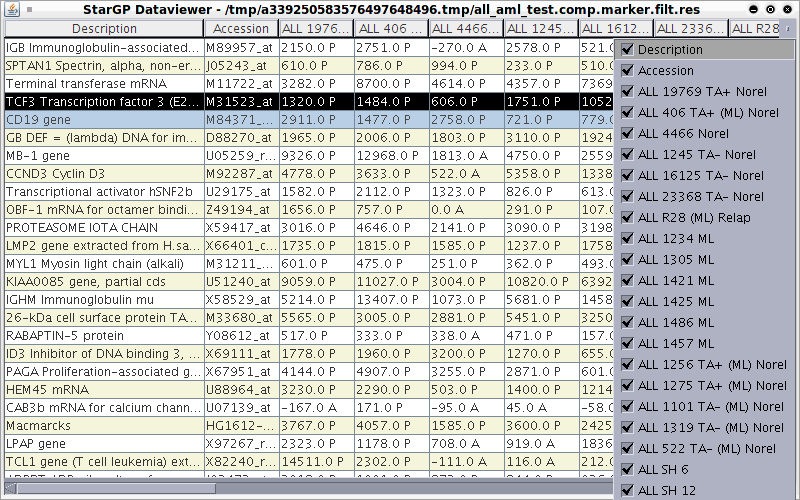
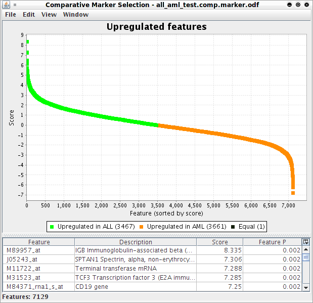
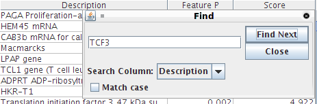
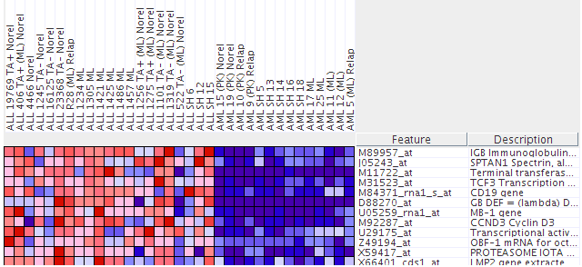

In this problem set you will use three types of viewers to analyze gene expression data. Below are the instructions for logging on to GenePattern and running any one of the viewers (or pipelines). You will be instructed in the problem set below to run a particular pipeline depending on the questions being asked.
When you perform a microarray experiment to see what genes are expressed at very high or very low levels in ALL tumors and AML tumors, you get a collection of raw data that looks like this.Original Data Main Window

As you can see, these data are hard to interpret. The program you are about to use allows you to visualize these data in easily interpretable ways. We will examine below three ways in which these data can be visualized.
Navigate to the main page by clicking the GenePattern logo at the top left of the page. Run the “seeMicroArrayData” pipeline from GenePattern using the all_aml dataset. (Refer to “How to run a pipeline” on page 5 for instructions)

You can search for a gene by finding its identification number in the column entitled Feature on the Upregulated Features page, which can be done using the Find command apple-F for Mac or ctrl-F for Windows/Linux:

Navigate to the main page by clicking the GenePattern logo at the top left of the page. Run the “seeHeatMapData” pipeline from GenePattern using the all_aml dataset. (Refer to “How to run a pipeline” on page 5 for instructions).

NOTE: To zoom in, go to Edit > Display Options, and increase the grid size by moving the slider bar to the right. To zoom out, move the slider bar to the left.
The columns, labeled at the top of the heat map shown in the figure above, are the individual tumor samples. Each row, labeled to the right of the heat map, corresponds to the level of expression of a particular gene in all the tumor samples. A red block means a “high” level of expression and blue means a “low” level of expression (similar to hot/cold). Identify which sample behaves least like the others with respect to expression in Terminal Transferase.
Run the “seeClusterData” pipeline from GenePattern using the all_aml dataset. (Refer to “How to run a pipeline” on page 5 for instructions)
NOTE: To zoom in, go to Edit > Display Options, and increase the grid size by moving the slider bar to the right. To zoom out, move the slider bar to the left.
Similar to the heat map viewer, the columns are the individual tumor samples while each row corresponds to a specific gene and shows its level of expression in all the tumor samples. A red block means a “high” level of expression and blue means a “low” level of expression (similar to hot/cold). In this case, the tumor samples (columns) are “clustered” or grouped according to how similar their expressions are. Use this to determine which sample is least like the other in each case (AML and ALL).
Remember that “high” corresponds to “more red” while “low” corresponds to “more blue”. In this problem we’re interested in the TYPE of tumor (ALL or AML). Use the expressions of the other samples (columns) to identify which type this new sample most likely belongs to.